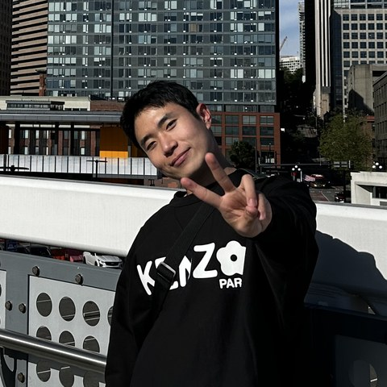

I am a Ph.D. Candidate at AI Graduate School, GIST, advised by Prof. Hae-Gon Jeon. I received my B.S. in EECS from GIST in 2021. My research interests include aesthetic image and video enhancement, generative models, and multi-modal modeling. Feel free to contact me if you have any questions about me or my projects.
News
-
Sep 2026DyMoS has been accepted at NeurIPS 2026! 🎉
-
Aug 2026Received the Outstanding Reviewer Award and was selected for the Doctoral Consortium at ECCV 2026! 🏆
-
Jul 2026TriMotion, On/Off Handwriting, Universal Immunization, and PIAvatar have been accepted at ECCV 2026! See you in Malmö! 🎉
-
Jan 2026Motion Prior Distillation and CHROMA have been accepted at ICLR 2026! 🎉
-
Sep 2025Started a research internship at Huawei Noah’s Ark Lab in London! 🔥
-
Jul 2025Video Color Grading via LUT Generation has been accepted at ICCV 2025! 🎉
-
Nov 2024Selected as a Finalist of the Qualcomm Innovation Fellowship Korea! 🎉
-
Jul 2024Kinetic Typography Diffusion Model has been accepted at ECCV 2024! 🎉
-
Jul 2024Attended the International Computer Vision Summer School (ICVSS) in Sicily, Italy! 🔥
-
Feb 2024Close Imitation of Expert Retouching has been accepted at CVPR 2024! 🎉
-
Jun 2023Started a research internship at the Video Processing Lab, UC San Diego! 🔥
-
Feb 2023Received the Excellent Paper Award at the 29th International Workshop on Frontiers of Computer Vision! 🏆
-
Nov 2022Task-specific Scene Structure Representations has been accepted at AAAI 2023 as an Oral Presentation! 🎉
-
Mar 2021Started my Ph.D. journey at GIST! 🔥
-
Feb 2021Received the Best B.S. Thesis Award from GIST! 🏆
Research Interests
-

Creative AI
Aesthetic image/video enhancement, video color grading, image decolorization
-

Generative Models
3D look-up-table generation, kinetic typography generation, video motion generation
-

Computational Photography
Super resolution, denoising, low-light enhancement, depth upsampling
Publications
-

Rebalancing Reference Frame Dominance to Improve Motion in Image-to-Video Models
Neural Information Processing Systems (NeurIPS), 2026
-

TriMotion: Modality-Agnostic Camera Control for Video Generation
European Conference on Computer Vision (ECCV), 2026
-

Bridging Online and Offline Handwriting via Differentiable Physical Rendering
European Conference on Computer Vision (ECCV), 2026
-

Universal Image Immunization against Diffusion-based Image Editing via Semantic Injection
European Conference on Computer Vision (ECCV), 2026
-

PIAvatar: Physically Interactive Avatars via Deformation Gradient Decoupling
European Conference on Computer Vision (ECCV), 2026
-

Motion Prior Distillation in Time Reversal Sampling for Generative Inbetweening
International Conference on Learning Representations (ICLR), 2026
-

CHROMA: Consistent Harmonization of Multi-View Appearance via Bilateral Grid Prediction
International Conference on Learning Representations (ICLR), 2026
-

-

Kinetic Typography Diffusion Model
European Conference on Computer Vision (ECCV), 2024
-

-

Education
-
2021 – presentPh.D., AI Graduate School Gwangju Institute of Science and Technology Advisor: Prof. Hae-Gon Jeon
-
Jun – Aug 2018Exchange Student University of California, Berkeley
-
2017 – 2021B.S., Electrical Engineering and Computer Science Gwangju Institute of Science and Technology Advisor: Prof. Hae-Gon Jeon
Research Experience
-
Sep 2025 – Mar 2026Research Intern Huawei Noah’s Ark Lab, London, United Kingdom Advisors: Prof. Jiankang Deng, Dr. Jifei Song · Modality-agnostic camera control for video generation
-
Jun – Aug 2023Research Intern Video Processing Lab, UC San Diego, United States Advisor: Prof. Truong Nguyen · Aesthetic video generation using language models and metric learning
-
Mar 2020 – Feb 2021Research Intern Visual AI Lab, GIST, South Korea Advisor: Prof. Hae-Gon Jeon · Aesthetic image decolorization using style transfer and contrast preserving
Contact
- Email seunghyuns98@gm.gist.ac.kr
-
Office
Room 425, Yonsei Engineering Research Park,
50 Yonsei-ro, Seodaemun-gu, Seoul 03722, Republic of Korea - Elsewhere